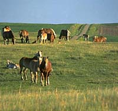
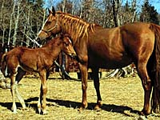
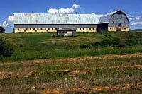
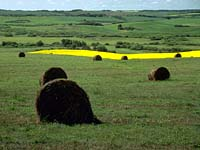

Breeding and Foaling

Horses have a longer gestation period than cattle. About 320 - 360 days are required, but the time varies with the type of horses, the time of year, foal sex, and the age of the mare. An 11-month term of pregnancy means that horses are commonly bred in the early summer so they will foal in the following spring. Mares should be vaccinated 4-6 weeks prior to foaling for a variety of diseases to ensure a high level of antibodies are present in the colostrum for the foal.
When the foal is born, the mare and foal should be given time to bond. A quick but gentile examination of the foal should be done during which time the navel stump should be disinfected with an iodine solution and vaccinations may be given. It is important that the newborn foal begins to suckle within the first 6 hours after birth. During this time, the mares milk is high in antibodies which the foal can absorb and use to enhance its weak immune system against infection and disease.
|

As the foal develops it is important that it be exercised for strong muscle development. Keeping the mare and foal on pasture will encourage stronger and more rapid growth. The foals hooves should be check regularly to ensure they are health. Hoof trimming will eventually be required and should be done by a skilled individual to avoid injury.
At 4 - 6 months of age, the foal should be weaned. This can be done as early as 2 months of age in some areas. Weaning should be done while the weather is still warm to avoid over stressing the foal. The foal can be removed from the mare or housed in an adjacent pen. If removed from the care of the mare, the foal may stop eating for several days and can loose some body weight. If housed in an adjacent pen, the foal is not able to suckle, but will be consoled by the presence of the mare and will continue feeding if provided with a good quality hay and water.
Housing

While not all adult animals will require a shelter if well fed, young and growing animals and pregnant animals will need shelter and protection from Saskatchewan's cold winters. Barns are usually reserved for intensive care of newborn animals and expensive stock. However, they must be cleaned on a regular basis to prevent the risk of parasite contamination and disease. Animals house in barns will also require additional labour because they will require regular exercise to avoid muscle weakness and leg injury.
Another disadvantage of housing horses in barns in that they must be heated because the low stocking density in most horse barns does not allow sufficient body heat to accumulate.
The additional labour and expense of maintaining a barn means that most horses are housed outdoors with access to a wind shelter and straw bedding. This is suitable for many adult animals and is much cheaper to maintain. Pens should not be fenced with barbed wire to avoid injury. Wood or woven wire fences are a popular alternative but are much more expensive.
Nutrition

The horse is a non-ruminant herbivore. Unlike cattle and sheep, the horse only has one stomach. However, it is able to make use of many of the nutrients found in forages such as hay because the horse has a large functional cecum. The cecum (which is also called the appendix in people) contains a large population of bacteria similar to the rumen of cattle and sheep. In the cecum, bacteria provide the enzymes required from the digestion of forage carbohydrate which the horse would normally be unable to digest. Because horses have small stomachs, they will eat many small meals. While on pasture, a horse can graze at it's leisure. Those animals raised in confinement will require continuous access to feed and water.
Horses should be fed based on their body weight. A horse will eat a maximum of 3% of its body weight. Foals may eat a slightly higher percentage because of their small body size. Typically a good quality hay is provided free choice and will meet the nutritional requirements of most animals. During pregnancy, lactation and in cold weather, the horses may require additional nutrients which can include grains such as oats. A horses diet should be carefully managed to avoid fat or thin body conditions which may affect the animal's reproductive and athletic performance.
|